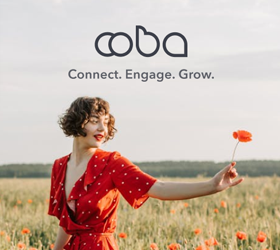

Ooba Social Connection
Mobile App
OOBA is a social connection app designed to help people in midlife build meaningful relationships through shared interests, experiences, and values. As life becomes busier and social circles naturally shrink, many people find it harder to form genuine connections beyond superficial interactions.
Learn more